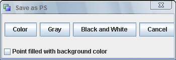

1. 
New
Clear everything and begin with a fresh new example.
2.

Open
Open (load) an new example. The current example will be overridden. If you need to keep it, be sure to save it before opening a new example.
3.

Save
After the diagram and/or its visual proof have been prepared, we can save it to a file with the .gex extension for future uses.
4.
Save as ..
Save the file as a new file.
5.
Save as PS
Save the diagram as a PS file. This action will popup a dialog for use to select the mode of the ps:

Color: Colorful PS file
Gray: PS file in Gray.
Black and White: PS file with only two color: black and white.
Point filled with background color: Normal the points are circles in different color. This option allows all the points in the PS file are filled with background color.
6.
Save as Text
After the diagram is drawn and the conclusion is given, the user can save it as the text-based input for the furture use. The text shows the construction of the diagram step by step. Note that some information may be lost during saving. ( For example, Color of the elments, Font of the text).
7.
Save as PDF
Save the diagram as a PDF file.
8.
Save as Image
Save the diagram as a static image. The type of the file can be JPG, BMP, PNG etc. This action will popup a window containing all the elements in the drawing pane. The user need to choose a rect to export.
9.
Save as Animated Image
Save the diagram a animated image. The user need to use the menu "Action -> Animation" to define an animation first. For detail, see the action: Animation >>.
10.
Save Proof as Animated Image
Save the proof as an animated image.
11.
Print
Print the diagram with the local printer.
12.
Exit
Exit the program.
JGEX Help